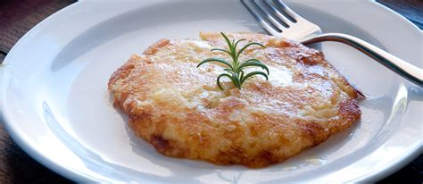
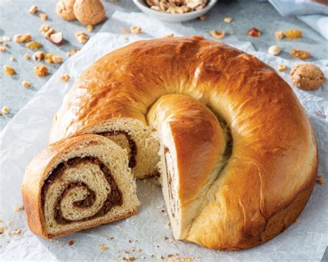
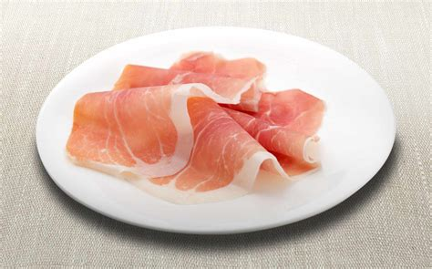
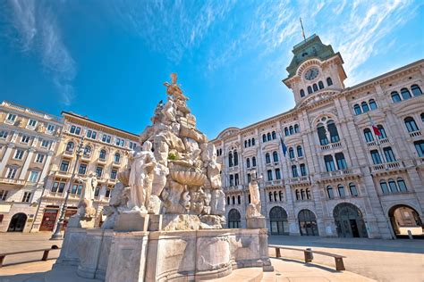
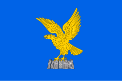
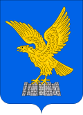

Friuli Venezia Giulia
Panoramica
Friuli Venezia Giulia è una regione autonoma situata nel nord-est dell'Italia, al confine con l'Austria e la Slovenia. È conosciuta per la sua diversità culturale, paesaggi montani, costa adriatica e città storiche come Trieste e Udine. La regione combina influenze italiane, slovene e austriache, rendendola unica nel panorama culturale italiano.
Fatti in Breve
- Capoluogo: Trieste
- Lingue Regionali: Italiano, Friulano, Sloveno, Tedesco
- Popolazione: ~1.2 milioni
- Famosa per: Città storiche, vini pregiati, montagne e lagune
- Curiosità: È l'unica regione italiana con quattro lingue ufficialmente riconosciute!
Piatti Tipici
Frico

Jota

Gubana

Prosciutto di San Daniele

Luoghi Famosi
Trieste

Castello di Miramare

Udine

Cividale del Friuli

Alpi Giulie

Quando Visitare
Il periodo ideale per visitare il Friuli Venezia Giulia è in primavera (aprile–giugno) e in autunno (settembre–ottobre), quando il clima è mite e i paesaggi sono spettacolari. L'inverno è perfetto per lo sci nelle Alpi Giulie, mentre l'estate è ottima per esplorare la costa e partecipare a eventi culturali.
Simboli Regionali
- Bandiera: 
- Stemma: 